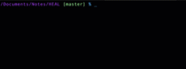
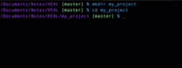
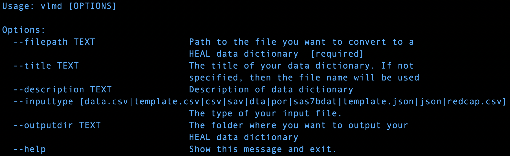

How to Generate HEAL-compliant Data Dictionaries¶
In order to submit a study’s data dictionary to the Platform, the data dictionary must conform to the HEAL variable-level metadata schema. The following instructions will demonstrate how to use a tool we’ve created (called the HEAL Data Utilities) to help you make your existing data dictionary HEAL-compliant.
1. Getting Started¶
The HEAL Data Utilities is a software package that can be leveraged via a command-line interface. If you already have experience with the command-line interface, please see our instructions for advanced users.
To get started, you will need to navigate to your computer’s command-line interface, or CLI. The following will provide brief
The Command-line Interface (CLI)¶
macOS¶
For users with a Mac, the command-line interface is Terminal, which can you can access by doing one of the following:
-
Click the Launchpad icon in the Dock, type Terminal in the search field, then click Terminal.
-
In the Finder, open the /Applications/Utilities folder, then double-click Terminal.
-
Press ‘Command + Space’ to open Spotlight Search, type Terminal in the search field, then click Terminal.
Windows and PC:¶
Windows and PC users
PowerShell and Command Prompt
Linux:¶
Python¶
The HEAL Data Utilities is built on Python, a widely used programming language that may already be installed on your computer.
While the HEAL Data Utilities should be compatible with most versions of Python, you can download the latest version of Python here
2. Set Up a Virtual Environment¶
We highly recommend installing the HEAL Data Utilities in a virtual environment, since there are several software dependencies that will be installed along with healdata-utils. A virtual environment will allow you to successfully install these packages without affecting other software already installed on your computer. The following steps will walk you through this process. You can learn more about creating virtual environments with Python here.
Create a Project Folder¶

-
mkdir my_project/ -
cd my_project
These two lines create a folder, or directory, named my_project. That folder is then set as the current working directory; this directory will become the virtual environment.
Create Input and Output Folders¶

-
mkdir input -
mkdir output
These two lines create:
-
an input folder, where you will download your study’s data dictionary; and
-
an output folder, where your generated HEAL-compliant data dictionary will be saved.
Download Your Study’s Data Dictionary¶
There are many applications and software packages that are commonly used during the data collection and processing phases of studies. The HEAL Data Utilities accommodates ten different input file formats, which include:
1. data.csv
2. template.csv
3. csv
4. sav
5. dta
6. por
7. sas7bdat
8. template.json
9. json
10. redcap.csv
Download your study’s data dictionary into the my_project/input/ folder. If you would like more information on which file formats are supported, please check out here.
Create Virtual Environment¶
python -m venv venv –upgrade-deps
Activate Virtual Environment¶
MacOS and Linux¶
source venv/bin/activate
Windows and PC¶
venv\Scripts\activate.bat
If you would like to deactivate your virtual environment at any time, use the command deactivate.
3. Install the HEAL Data Utilities¶
Now that you’ve created and activated your virtual environment, you can install the HEAL Data Utilities.
pip install healdata-utils
Next, to confirm that the HEAL Data Utilities package was installed correctly:
which vlmd
The installation path should look like something like this:
/Users/my_username/path_to_project_folder/my_project/venv/bin/vlmd
4. Generate a HEAL Data Dictionary¶
Now that the HEAL Data Utilities python package has been successfully installed, it can be used to generate a HEAL-compliant data dictionary. The command vlmd will be used to call the healdata-utils python package.
To confirm installation and to see the different command options:
vlmd --help

Note that the only required flag is --filepath, the path to the file you want to convert to a HEAL data dictionary.
Here is how you would generate a HEAL Data Dictionary with a data dictionary downloaded from RedCap:
MacOS and Linux¶
Execute the following command:
vlmd --filepath ./input/example_redcap_demo.redcap.csv --inputtype redcap.csv --outputdir ./output/heal-vlmd-from-redcap.csv
In this command, "example_repcap_demo.redcap.csv” is the filename of the data dictionary that was exported from RedCap, “redcap.csv” is the file type of the inputted data dictionary, and heal-vlmd-from-redcap.csv is the filename chosen for the newly created HEAL-compliant data dictionary.
Once this command executes, theI can locate my new, generated HEAL-compliant data dictionary can be located in the /output/ directory.
Windows and PC¶
Execute the following command:
vlmd --filepath .\input\example_redcap_demo.redcap.csv --inputtype redcap.csv --outputdir .\output\heal-vlmd-from-redcap.csv
In this command, "example_repcap_demo.redcap.csv” is the filename of the data dictionary that was exported from RedCap, “redcap.csv” is the file type of the inputted data dictionary, and heal-vlmd-from-redcap.csv is the filename chosen for the newly created HEAL-compliant data dictionary.
Once this command executes, theI can locate my new, generated HEAL-compliant data dictionary can be located in the /output/ folderdirectory.
If you do not enter a --description, it will produce an error for the JSON format:
JSON data dictionary not valid, see heal-json-errors.json
title
At this point you can deactivate your virtual environment.¶
Summary of Command Line Prompts¶
mkdir my_projectcd my_projectpython -m venv venv- Activate your virtual environment
source venv/bin/activateorvenv\Scripts\activate.bat mkdir inputmkdir output- Download Your Data Dictionary into the
my_project/input/folder pip install healdata-utilsvlmd --helpvlmd --filepath ./input/example_redcap_demo.redcap.csv --inputtype redcap.csv --outputdir ./output/heal-vlmd-from-redcap.csv
input/sprint_2020-12-16.xlsx
vlmd --filepath ./input/sprint_2020-12-16.redcap.csv --inputtype redcap.csv --outputdir ./output/sprint_2020-12-16-heal-dd.csv